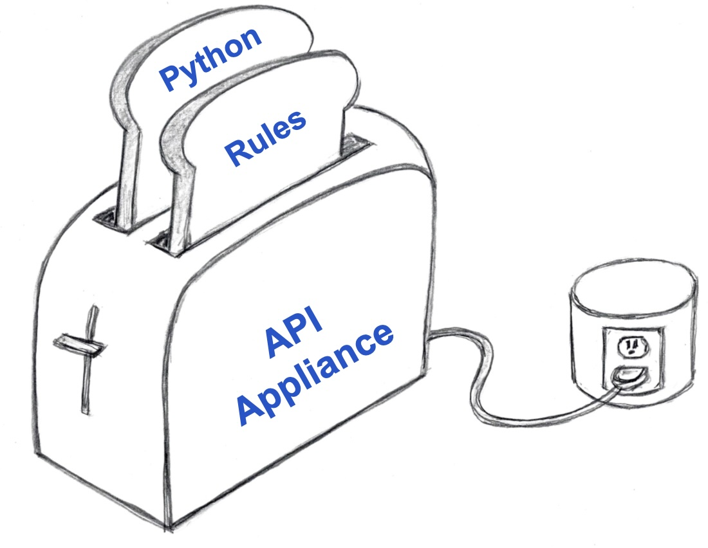
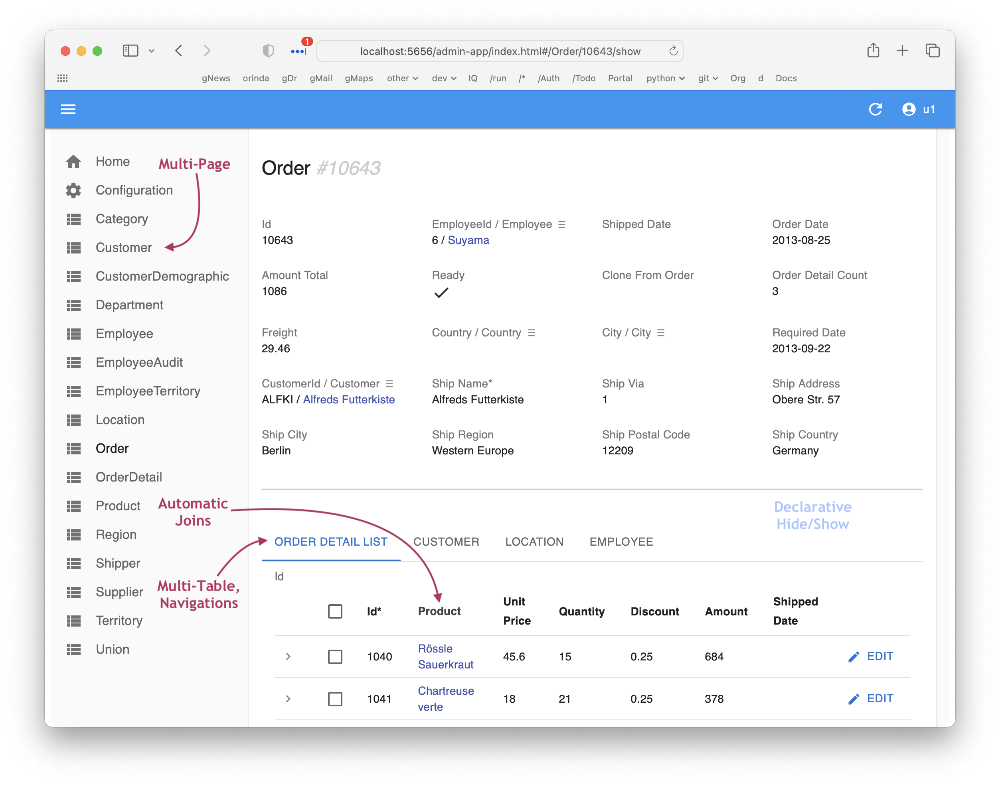
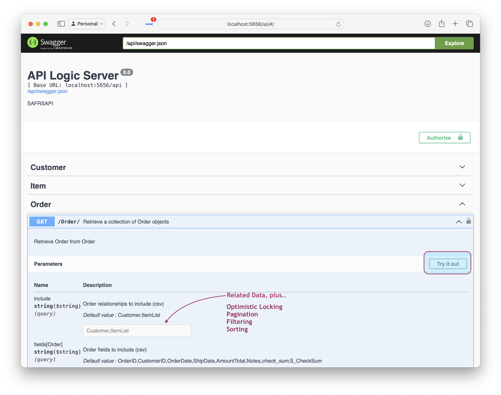
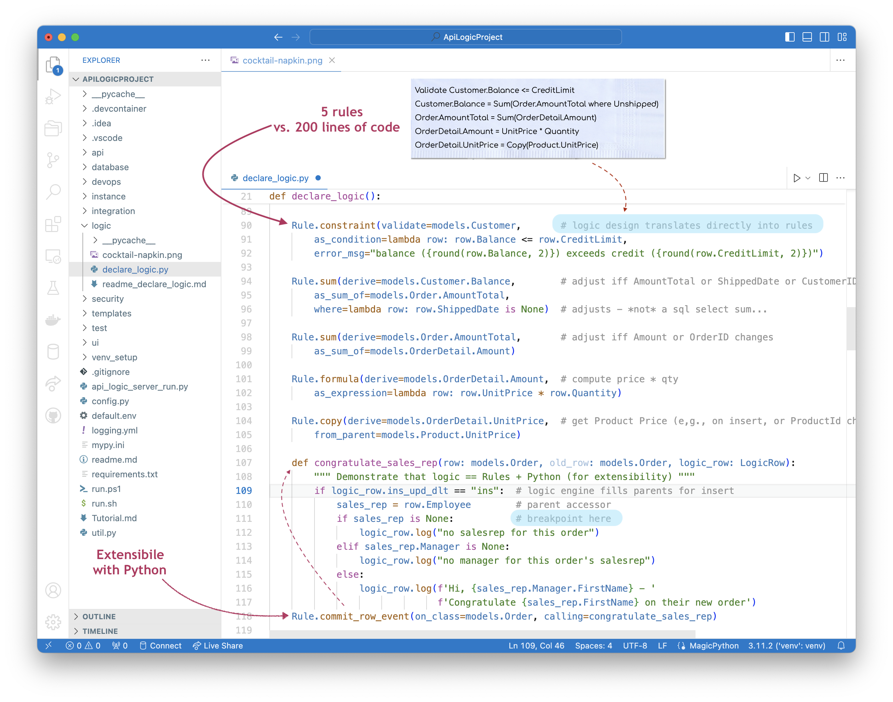
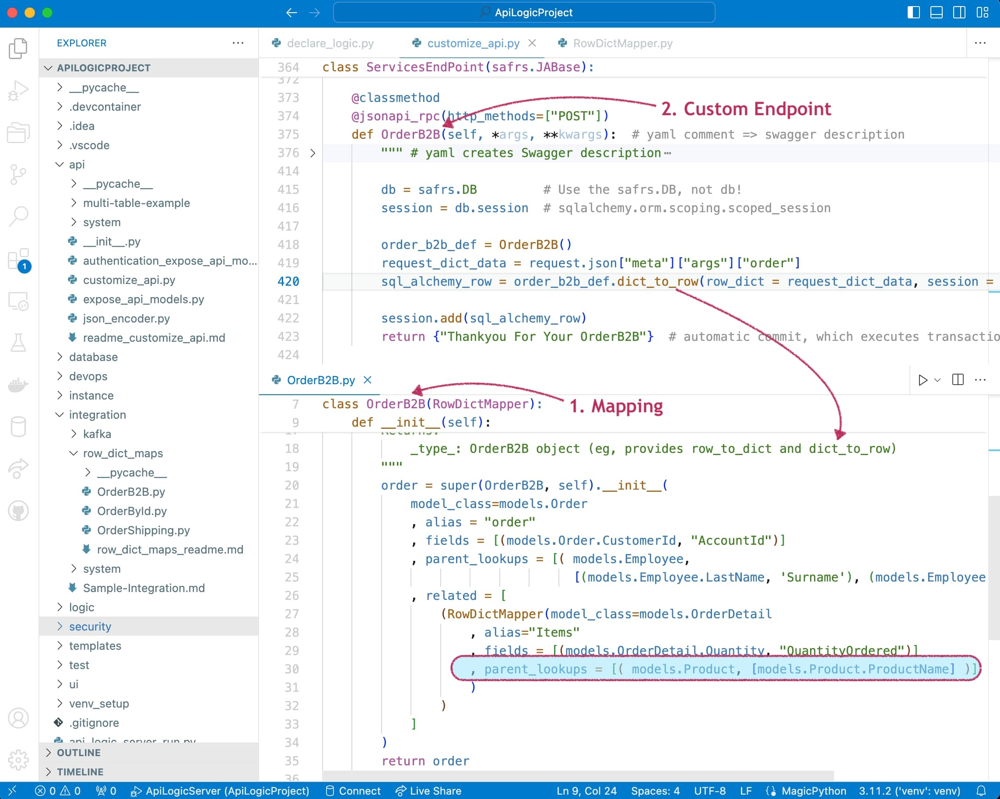
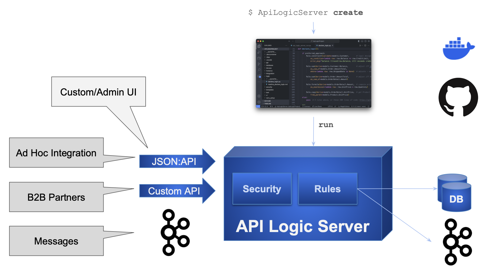

Instant Microservices, for Integration and App Backends
Instant Microservices, for Integration and App Backends
For Developers and their organizations seeking to increase business agility,
API Logic Server provides Microservice Automation: create executable projects with 1 command:
- API Automation: crud for each table, with pagination, optimistic locking, filtering and sorting, and
- App Automation: a multi-page, multi-table Admin App.
Customize in your IDE: use standard tools (Python, Flask, SQLAlchemy, GitHub and Docker), plus
- Logic Automation: unique rules - 40X more concise multi-table derivations and constraints.
Unlike frameworks, weeks-to-months of complex development is no longer necessary.
API Logic Server provides unique automation for instant integrations and app backends.
Overview - Videos, Tour
API Logic Server is an open source Python project. It is a CLI for project creation, and set of runtimes (SAFRS API, Flask, SQLAlchemy ORM, business logic engine) for project execution.
It runs as a standard pip install, or under Docker. For more on API Logic Server Architecture, see here.
Explore it below.
See Microservice Automation (40 sec) Click Here
See how Microservice Automation creates and runs a microservice - a multi-page app, and an API.
-
Here is a microservice -- api and admin app - created / running in 5 seconds
- It would be similar for your databases
-
Then, customize in your IDE with Python and Logic Automation: spreadsheet-like rules

Video Tutorial (6 min)
Click the image below for a video tutorial, showing complete project creation, execution, customization and debugging (instructions here). Or, see it using AI: click here.
Quick Screenshot Tour of using API Logic Server: Create, Run, Customize

1. Create: Microservice Automation
Plug into your database: Microservice Automation means create projects instantly, with a single CLI command:
ApiLogicServer create --project_name=ApiLogicProject --db_url=nw
2. Run: API Automation and App Automation
Microservice Automation creates a project that is executable, with:
The API unblocks UI Developers from waiting on lengthy API development cycles.
The Admin App can be used for instant business user collaboration.
See JSON:API and Admin App
You can run directly (python api_logic_server_run.py), or open it in your IDE and use the pre-created run configurations:

Unlike frameworks which require significant time and expertise, the create command builds a complete API for your database, with endpoints for each table, including swagger. The Admin App provides a link to the Swagger:

3. Customize: Logic Automation, Python Flexibility
Customize created projects in your IDE, with Python and standard libaries. Significantly, Microservice Automation also includes:.
- Logic Automation means you customize logic using Rules and Python in your IDE
Rules are unique and confer significant business agility - 40X more concise than code,
for security and multi-table derivations and constraints.
See Logic With Rules and Python
Rules are 40X more concise than code, and are extensible with Python:

For more on customization, click here.
Customization also provides no-code ad hoc integrations,
and enables Instant Business Relationships.
See Integration: APIs and Messages
The automatically created JSON:API provides no-code ad hoc integrations, enabling organizations to move beyond ETL. For example, other applications might require a customer record, and their addresses. The automatically created self-serve JSON:API requires no code, and reduces future custom API development:
- Create the JSON:API
- Declare security, to control access and row level authorization
Integrate with B2B Partners by creating custom endpoints using Python and Flask, with under 10 lines of code. Instant business relationships. Observe that:
- Update logic is partitioned out of each service - or UI - into shared Logic
- Mapping between SQLAlchemy rows and requests is automated with the RowDictMapper

Integrate internal systems with Kafka, using business logic events:

For more on integration, explore running code in the Application Integration Sample Tutorial.
Scenarios
Application Integration
As illustrated below, API Logic Server supports transactions from User Interfaces, and 3 alternatives for Application Integration:
-
Ad Hoc Integration: the automatically created JSON:API provides no-code ad hoc integrations, enabling organizations to move beyond ETL. For example, other applications might require a customer record, and their addresses from an existing database.
-
JSON:API are a standard for self-serve APIs -- where clients can select the columns and the related data they require.
-
Analogous to GraphQL, self-serve APIs reduce the need for ongoing custom API development.
-
-
B2B Partners: you can use Python, Flask and SQLAlchemy to create Custom APIs, e.g. for B2B Partners. These are simplified by automatic reuse of Logic, and Integration Mapping.
-
Messages: Application Integration support also provides automation for producing and consuming Kafka messages. Here's an article: click here. To see these services in a tutorial, click here.

Unblock Client App Dev
Framework-based API development is time-consuming and complex. Since client App Dev depends on APIs, front-end dev is often blocked. This serialized dev process reduces business agility, and increases pressure on the team.
API Logic server can change that.
-
API Automation means client App Dev can start as soon as you have a database
-
Logic Automation means that
- Such logic - a substantial element of the system - is automatically partitioned out of each client into server-based logic. This reduces client coding, and enables the logic to be shared between user interfaces and services.
- Logic development can proceed in parallel with client App Dev
Here's an article, here. Or, the the Tutorial, here.
Instant Microservices with AI-Driven Schema Automation
API and Logic Automation begins with a database. But what if it's a new project, and there is no database.
You can certainly use your SQL tools. But we all know that SQL can be... tiresome.
AI provides a solution: Schema Automation. You can use ChatGPT to create the SQL DDL like this:
Create database definitions from ChatGPT
Create a sqlite database for customers, orders, items and product
Hints: use autonum keys, allow nulls, Decimal types, foreign keys, no check constraints.
Include a notes field for orders.
Create a few rows of only customer and product data.
Enforce the Check Credit requirement:
- Customer.Balance <= CreditLimit
- Customer.Balance = Sum(Order.AmountTotal where date shipped is null)
- Order.AmountTotal = Sum(Items.Amount)
- Items.Amount = Quantity * UnitPrice
- Store the Items.UnitPrice as a copy from Product.UnitPrice
Then, employ API Logic Server API and Logic Automation, and use Python and standard frameworks to finish the job.
Here's a tutorial you can to explore this: click here,or see this article.
For additional Use Cases, click here.
Start: Install, Samples, Training
Install
If you have the Python (version 3.8-3.11), install is standard (more detailed instructions are here), typically:
python -m venv venv # may require python3 -m venv venv
source venv/bin/activate # windows: venv\Scripts\activate
python -m pip install ApiLogicServer
Then explore the demos, samples and tutorials, below.
Type:
- Demo: Small Databases, Introduces Key Features
- Tutorial: Detailed Walk-throughs
- Samples: other databases (brief description)
Recommendation: start with the first 2 items
Demos, Tutorials, Samples
| Project | Notes | Type |
|---|---|---|
| AI Sample | 1. Use ChatGPT to create new databases from natural language 2. Illustrate a very rapid create / customize / iterate cycle 3. Introduce Integration |
Demo |
| Tutorial | 1. How to Use the Key Features 2. Key code samples for adapting into your project |
Tutorial |
| App Integration | Illustrates running Kafka messaging, self-serve and customized APIs, choreographed with rules and Python | Tutorial |
| Deployment | Containerize and deploy your applications | Tutorial |
| Agile | Behavior Driven Design and testing, using Behave | Tutorial |
| AI Drives Agile Vision | Use ChatGPT to create new databases from natural language, to bootstrap an agile create / deploy and collaborate / iterate cycle | Demo |
| Basic Demo | Focused use of API, Admin App and Rules on small customer/orders database | Demo |
| Allocation | Power Rule to allocate a payment to a set of outstanding orders | Sample |
| MySQL Docker | Create projects from sample databases: chinook (albums and artists), and classicmodels (customers and orders) | Sample |
| Sqlite databases | Create projects from pre-installed databases via abbreviations: - chinook, classicmodels, todo |
Sample |
| BudgetApp | illustrates automatic creation of parent rows for rollups | Sample |
| Banking App | Illustrates more complex logic (Funds Transfer) | Sample - obtain via git clone |
Finally, try your own database.
Training
After installing, you can optionally run the first demo, above. The key training activities are:
- Perform the Tutorial
ApiLogicServer create --project_name= --db_url=- Keep this project installed; you can find code samples by searching
#als
- Perform Logic Training
- Spreadsheet-like rules and Python for integration, and multi-table derivations / constraints
- API Customization: explore the code in
api/customize_api.py- Note this is largely standard Flask, enhanced with logic
Resources
You might find the following helpful in exploring the project:
-
Installed Sample Databases - Here are some installed sample databases you can use with simplified abbreviations for
db_url. -
Dockerized Test Databases - Then, you might like to try out some of our dockerized test databases.
-
auth - sqlite authentication database (you can also use other DBMSs)
Release Notes
02/24/2024 - 10.03.04: Issue 45 (RowDictMapper joins), Issue 44 (defaulting), Issue 43 (rebuild no yaml), Tests
02/13/2024 - 10.02.04: kafka_producer.send_kafka_message, sample md fixes, docker ENV, pg authdb
02/07/2024 - 10.02.00: BugFix[38]: foreign-key/getter collision
01/31/2024 - 10.01.28: LogicBank fix, sample-ai, better rules example
01/15/2024 - 10.01.18: Cleanup, logic reminder, nw tutorial fixes
01/08/2024 - 10.01.07: Default Interpreter for VS Code, Allocation fix, F5 note fix, #als signposts
01/03/2024 - 10.01.00: Quoted col names, Default Interpreter for VS Code
12/21/2023 - 10.00.01: Fix < Python 3.11
12/19/2023 - 10.00.00: Kafka pub/sub, Data Type Fixes
12/06/2023 - 09.06.00: Oracle Thick Client, Safrs 3.1.1, Integration Sample, No rule sql logging, curl Post
11/19/2023 - 09.05.14: ApiLogicServer curl, optional project_name arg on add-auth, add-db, rebuild
11/12/2023 - 09.05.08: multi-db bug fix (24)
11/07/2023 - 09.05.07: Basic-demo: simplify customization process
11/05/2023 - 09.05.06: Basic-demo enhancements, bug fixes (22, 23)
10/31/2023 - 09.05.00: Enhanced Security (global filter, permissions), Logic (Insert Parent)
09/29/2023 - 09.04.00: Enhanced devops automation (sqlite, MySql, Postgres)
09/08/2023 - 09.03.04: AI Driven Automation (preview)
09/08/2023 - 09.03.00: Oracle support
09/08/2023 - 09.02.23: Fix Issue 16 - Incorrect admin.yml when table name <> class name
08/22/2023 - 09.02.18: Devops container/compose, Multi-arch dockers, add-auth with db_url, auth docker dbs
07/04/2023 - 09.01.00: SQLAlchemy 2 typed-relns/attrs, Docker: Python 3.11.4 & odbc18
06/22/2023 - 09.00.00: Optimistic Locking, safrs 310 / SQLAlchemy 2.0.15
05/07/2023 - 08.04.00: safrs 3.0.4, tutorial demo notes, rm cli/docs, move pythonanywhere
05/01/2023 - 08.03.06: allocation sample
04/29/2023 - 08.03.03: restore missing debug info for open database failures
04/26/2023 - 08.03.00: virt attrs (Issue 56), safrs 3.0.2, LogicBank 1.8.4, project readme updates
04/13/2023 - 08.02.00: integratedConsole, logic logging (66), table relns fix (65)
03/23/2023 - 08.01.15: table filters, cloud debug additions, issue 59, 62-4
02/15/2023 - 08.00.01: Declarative Authorization and Authentication
01/05/2023 - 07.00.00: Multi-db, sqlite test dbs, tests run, security prototype, env config
11/22/2022 - 06.03.06: Image, Chkbox, Dialects, run.sh, SQL/Server url change, stop endpoint, Chinook Sqlite
10/02/2022 - 06.02.00: Option infer_primary_key, Oct1 SRA (issue 49), cleanup db/api setup, restore postgres dvr
09/15/2022 - 06.01.00: Multi-app Projects
08/28/2022 - 06.00.01: Admin App show_when, cascade add. Simplify Codespaces swagger url & use default config
06/12/2022 - 05.02.22: No pyodbc by default, model customizations simplified, better logging
05/04/2022 - 05.02.03: alembic for database migrations, admin-merge.yaml
04/27/2022 - 05.01.02: copy_children, with support for nesting (children and grandchildren, etc.)
03/27/2022 - 05.00.06: Introducing Behave test framework, LogicBank bugfix
12/26/2021 - 04.00.05: Introducing the Admin app, with Readme Tutorial
Preview Version
This pre-release includes:
- Python 3.12
- Initial keycloak integration (wip - technology preview)
- Keycloak operates from import (not data), without requiring dev-network
- CLI options now support dashes (eg, --project-name or --project_name)
- View generation (table objects in classes, not supported for API automation)
- Early support for future UI enhancements with CLI commands
app-createandapp-build. Do not use these.
You can try it at (you may need to use python3):
python -m pip install --index-url https://test.pypi.org/simple/ --extra-index-url https://pypi.org/simple ApiLogicServer==10.03.45
Or use (neither available currently):
docker run -it --name api_logic_server --rm -p 5656:5656 -p 5002:5002 -v ~/dev/servers:/localhost apilogicserver/api_logic_server_x
Or, you can use the beta version on codespaces.
Key Features
API Features
| Feature | Notes |
|---|---|
| API Automation | Unlike Frameworks, API created automatically |
| Logic | Update requests automatically enforce relevant logic |
| Security | Role-based result filtering |
| Self-Serve JSON:API | UI Developers and Partners don't require API Dev |
| Standards-based | JSON:API |
| Optimistic Locking | Ensure User-1 does not overwrite changes from User-2 |
| Multi-table | Retrieve related data (e.g. customers, with orders) |
| Pagination | Performance - deliver large result sets a page at a time |
| Filtering | Injection-safe filtering |
Logic Features
| Feature | Notes |
|---|---|
| Conciseness | Rules reduce the backend half your system by 40X |
| Automatic Ordering | Simplifies Maintenance |
| Automatic Optimization | Reduce SQLs by pruning and adjustment-based aggregates |
| Automatic Invocation | Rules called automatically to help ensure quality |
| Multi-Field | Formulas and contraints can access parent data, with optional cascade |
| Multi-table | Sum / Count Rules can aggregate child data, with optional qualification |
| Extensible | Formulas, Constraints and Events can invoke Python |
| Debugging | Use IDE Debugger, and logic log to see which rules fire |
Security Features
| Feature | Notes |
|---|---|
| Authentication | Control login access |
| Authorization | Row level access based on roles, or user properties |
| Authorization | Global filters (e.g, multi-tenant) |
| Extensible | Use sql for authentication, or your own provider |
Admin App Features
| Feature | Notes |
|---|---|
| App Automation | Unlike frameworks, Multi-Page App is created automatically |
| Multi-Table - Parents | Automatic Joins (e.g., Items show Product Name, not Product Id) |
| Multi-Table - Children | Parent pages provide tab sheets for related child data (e,g, Customer / Order List) |
| Lookups | E.g., Item Page provides pick-lists for Product |
| Cascade Add | E.g., Add Order defaults the Customer Id |
| Declarative Hiding | Hide fields based on expression, or insert/update/delete state |
| Intelligent Layout | Names and join fields at the start, Ids at the end |
| Simple Customization | Simple yaml file (not complex html, framework, JavaScript) |
| Images | Show image for fields containing URLs |
| Data Types | Define customfields for your data types |
Other Features
| Feature | Notes |
|---|---|
| Microservice Automation | One-command API / App Projects |
| Application Integration | Automation with APIs and Kafka Messages |
| AI-Driven Automation | Use ChatGPT to automate database creation |
| Multiple Databases | Application Integration |
| Deployment Automation | Automated Container Creation, Azure Deployment |
Works With
API Logic Server works with key elements of your existing infrastructure
| Works With | Notes |
|---|---|
| AI | Use ChatGPT to create databases, and use API Logic Server to turn these into projects |
| Other Systems | APIs and Messages - with logic |
| Databases | Tested with MySQL, Sql/Server, Postgres, SQLite and Oracle |
| Client Frameworks | Creates instant APIs that factors out business logic, where it is automatically shared for User Interfaces, APIs, and Messages |
| Your IDE | Creates standard projects you can customize in your IDE, such as VSCode and PyCharm |
| Messaging | Produce and Consume Kafka Messages |
| Deployment | Scripts to create container images, and deploy them to the cloud |
| Agile and Test Methodologies | Use Behave to capture requirements, rapidly implement them with API Logic Server, collaborate with Business Users, and test with the Behave framework |
Contact Us
We'd love to hear from you:
- Email: apilogicserver@gmail.com
- Issues: github
- Slack: https://apilogicserver.slack.com
More Information
Acknowledgements
Many thanks to
- Thomas Pollet, for SAFRS, SAFRS-react-admin, and invaluable design partnership
- Tyler Band, for leadership on security
- Marelab, for react-admin
- Armin Ronacher, for Flask
- Mike Bayer, for SQLAlchemy
- Alex Grönholm, for Sqlacodegen
- Thomas Peters, for review and testing
- Meera Datey, for React Admin prototyping
- Denny McKinney, for Tutorial review
- Achim Götz, for design collaboration and testing
- Max Tardiveau, for testing and help with Docker
- Michael Holleran, for design collaboration and testing
- Nishanth Shyamsundar, for review and testing
- Gloria Huber and Denny McKinney, for doc review
Articles
There are several articles that provide some orientation to API Logic Server:
- Instant App Backends With API and Logic Automation
- Instant Integrations With API and Logic Automation
- AI and Rules for Agile Microservices in Minutes
Also:
- How Automation Activates Agile
- How Automation Activates Agile - providing working software rapidly drives agile collaboration to define systems that meet actual needs, reducing requirements risk
- How to create application systems in moments
- Stop coding database backends…Declare them with one command.
- Instant Database Backends
- Extensible Rules - defining new rule types, using Python
- Declarative - exploring multi-statement declarative technology
- Automate Business Logic With Logic Bank - general introduction, discussions of extensibility, manageability and scalability
- Agile Design Automation With Logic Bank - focuses on automation, design flexibility and agile iterations
- Instant Web Apps